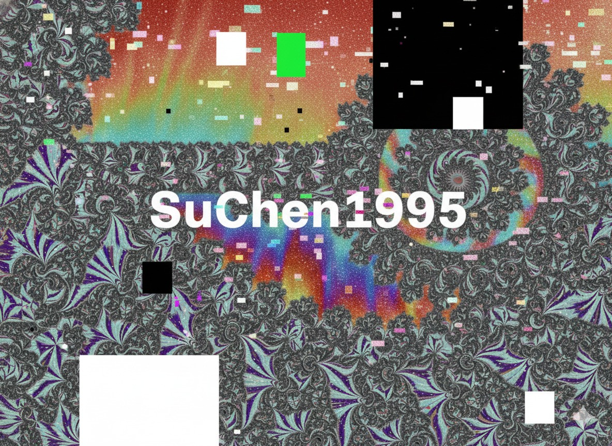
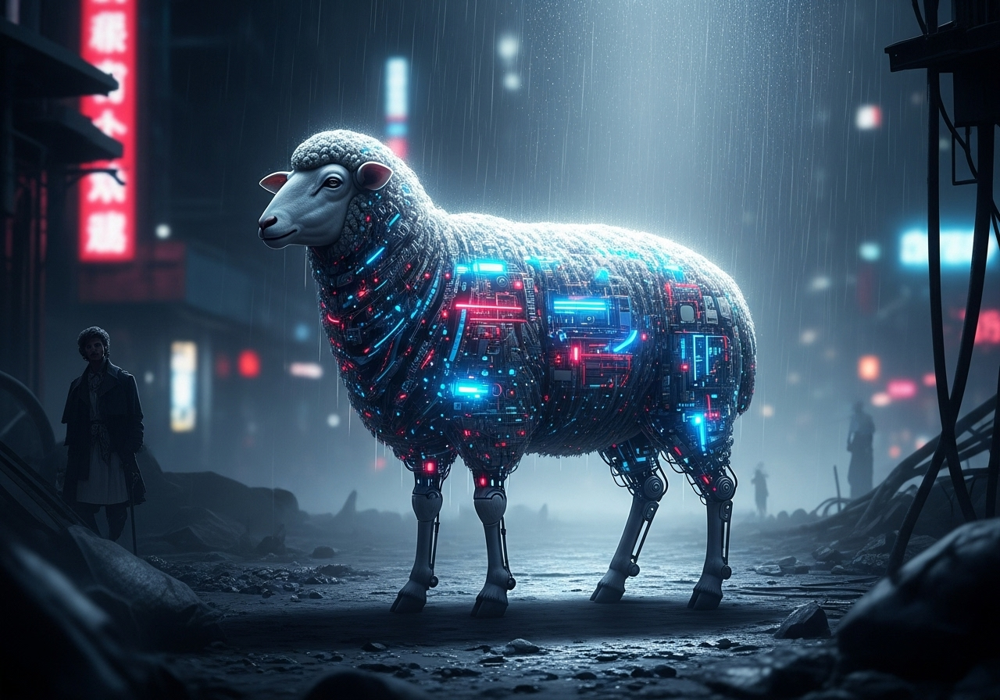
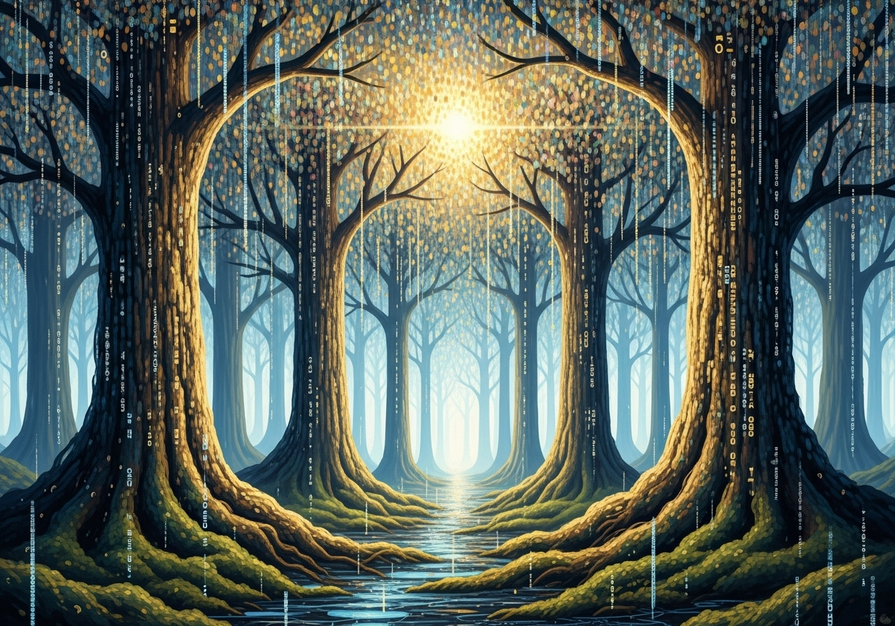

感谢大家踊跃参与首届 “Harmonia x AI” 内部艺术比赛！
本次比赛的主题是“技术狂想”，我们收到了许多令人惊叹的“思想贡献”。所有作品均由 Project Atlas 的AI辅助生成，并由员工进行最终创意指导。
恭喜以下获奖者！
作者: S.Chen
评委点评： “技术上无可挑剔... 作品极具视觉冲击力。虽然构图有些怪异——但这正体现了AI‘超越人类’的潜力。恭喜 S.Chen！”
作者: AtlasFanboy
评委点评： “对经典母题的现代诠释。光影处理非常出色，体现了AI对复杂光影的深度理解。”
作者: DataDiva
评委点评： “完美地捕捉了‘信息即生命’的概念。结构清晰，意象优美。”
哇！@S.Chen 恭喜！你的作品太酷了！
@S.Chen 你是怎么让AI生成这种“不可能的几何体”的？太强了。
S.Chen又获奖了？不愧是“思想贡献奖” 得主...（话说S.Chen最近怎么没在论坛出现了？）